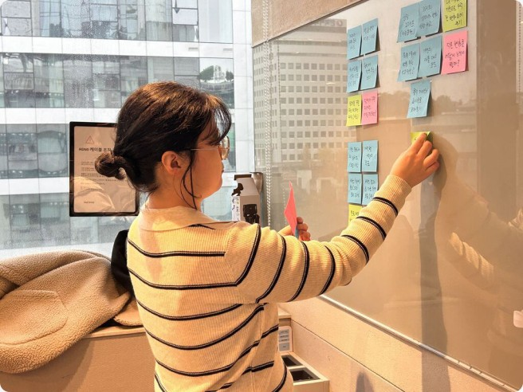
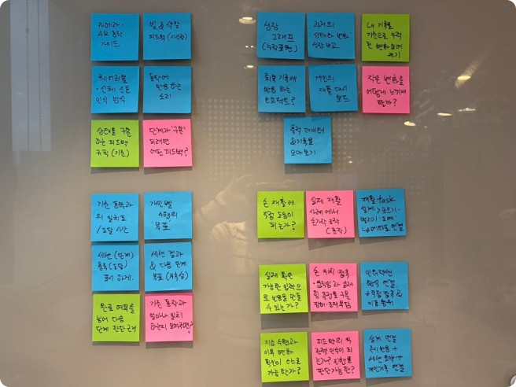

Support at home
Design priority: provide a clear starting point and manageable tasks for home practice.
Case study 01
A home rehabilitation service that combines pottery activities with real-time movement feedback for stroke survivors.
Project overview
The problem
After discharge, stroke survivors may continue hand exercises at home. But without feedback during practice, it can be difficult to know whether they are performing the movements as intended—and to stay motivated to continue.
Problem statement
How might we help stroke survivors practice hand movements at home with clear feedback and a sense of progress?
Design opportunity
For this concept, feedback is part of the activity itself. Users should be able to see how their touch changes the virtual clay and how each action moves them toward completing a pottery piece.
Design goal: make the next action clear.
Design direction
Pair visible responses to touch with achievable pottery tasks, so users can follow the activity and recognize their progress.
Research
I reviewed clinical literature and global patient communities to ground the design direction.
Top row: what patient communities and clinical literature showed. Bottom row: what 1:1 interviews with stroke survivors and caregivers confirmed.
Back to normal
Reddit communities: the ultimate goal is full functional recovery for daily life
Quit early
Reddit communities: with no real-time performance standard, patients stop rehab early
At home
Literature and communities: no professional guidance for fine motor recovery after discharge
1:1 interviews
In-depth interviews with stroke survivors and caregivers
Too late
Interviews: a summary after exercise can’t help correct movement
In the moment
Interviews: patients wanted correction during the exercise itself
Background: patients want full recovery for daily life but have no real-time standard to judge their own movements.
Interviews: a summary after exercise is not enough; patients need correction while they exercise.
Insight
Patients aim for full recovery yet cannot judge their own movements, so the real problem is the lack of real-time correction during exercise.
Affinity mapping & insights
I grouped research notes into recurring themes, then translated them into priorities for the home rehabilitation experience.

Design priority: provide a clear starting point and manageable tasks for home practice.
Design priority: make the effect of each touch visible while shaping the virtual clay.
Design priority: show task completion and practice history to support an ongoing routine.
Synthesis
A simple pottery task brings guidance, immediate visual responses and a sense of progress into one experience.
Target user & POV
The research pointed to one person: someone who has just come home after intensive hospital rehab and now has to rebuild fine motor control by herself.

“I can move my arm after discharge, but my left fingers won’t move the way I want. I can’t tell whether I’m doing it right, or even getting better, so I lose the will to keep going.”
A stroke survivor preparing for independence in daily activities (ADL). She regained shoulder and arm movement in early rehab, but pinch and precision in her left wrist and fingers are still weak. She is in the “golden time” of small-muscle rehab and looking for ways to train on her own.
Highly proficient with a smartphone and tablet.
Understands gamification and intuitive UI, with no resistance.
Usability testing & iteration
How testing with a real stroke survivor and an occupational therapist reshaped the interaction and the metrics.
Pilot UT
Validated onboarding flows
Finding
Layout bugs; stiff touch guides
Result
Fixed bugs; curved hand paths
1st Main UT
Tested with a stroke survivor
Finding
Flat screen clashed with full-grab motion
Result
Tracking friction exposed
Pivot
Reworked the interaction
Finding
Multi-finger dragging was high-friction
Result
Snap-based touch logic
Onboarding
Added a multi-level system
Finding
Needs differ across users
Result
Guided entry for every level
Expert UT
Tested with an occupational therapist
Finding
Praised weekly trends and finger hold stability
Result
SUS score: 70
Refinement
Reviewed metrics for clinical use
Finding
Recovery-date estimate could mislead
Result
Removed it; split flexion and extension
Takeaway
Rather than abandoning the concept, I pivoted the interaction from high-friction dragging to snap-based touch.
Solution landscape
Ends at discharge
Strengths
Weaknesses
Passive end-of-day summary
Strengths
Weaknesses
Real-time pottery biofeedback
Strengths
Weaknesses
Problem definition
HMW make the effect of a hand interaction clear during practice?
HMW translate repeated hand actions into an intuitive task?
HMW give users a clear next step after each session?
HMW make small changes and task progress visible over time?
Ideation / Explore → Select

What I did
Expanded ideas across three moments—during practice, after a session and over time—then compared hand-action fit, observable inputs and readable feedback.
What I learned
An engaging response was not enough. Users needed to understand what their action changed and see progress beyond a completion mark.
What I chose
A tablet pottery task: gathering and spreading touches reshape the clay, with immediate visual responses, session summaries and personal records.
Core experience
Personal setup → Virtual pottery → Session results → Practice history
Early exploration / Sketches
The next step was to sketch the task sequence: preparing, shaping the clay and reviewing the result. This section will show the service’s first screen ideas before digital prototyping.
Sketches
Add the project’s own sketch photos here.
Initial prototype
The first digital prototype made the task sequence and touch instructions testable. Present this version as a baseline, so the later changes are easy to understand.
First digital prototype
배치할 자료: 초안 화면 3–4개 또는 초기 작동 영상. 각 화면에는 버전과 수행 과업을 표시.
Questions to test
Can users get started? Can they understand the gesture? Can they recognize task progress?
여기에는 당시 확인하려던 질문을 적습니다. 테스트에서 나온 결과와 분리해 보여줍니다.
Validation
Show the observations that triggered a design change. Keep user testing and expert review distinct, and connect each observation to the affected screen or gesture.
기존 기록: 온보딩 흐름과 터치 안내의 사용성 점검.
추가할 근거: 테스트 과업, 참여자 정보, 문제가 드러난 초안 화면. 실명 대신 참여자 코드 사용.
기존 기록: 평평한 태블릿에서 사용자가 기대한 쥐기 동작과 다중 손가락 드래그 사이의 마찰.
추가할 근거: 관찰 장면·실제 발언·과업 결과.
기존 기록: 작업치료사 검토.
추가할 근거: 검토 범위, 제안 사항과 반영 여부. 사용성 평가와 임상 효과 검증을 구분.
Iteration
Make the change visible: show the original design, the observed friction and the revised behaviour together. Explain the decision before revealing the final interface.
Before / Initial interaction
배치할 자료: 수정 전 다중 손가락 드래그 화면·영상. 문제가 생긴 터치 지점과 안내를 표시.
After / Revised interaction
배치할 자료: 스냅 기반 터치와 단계별 온보딩 화면·영상. 같은 과업을 나란히 비교.
Observation → Design change → Recheck
Original: continuous multi-finger dragging.
Change: snap-based touch logic.
재검증 결과는 후속 테스트 근거가 있는 범위만 추가.
Original: early touch instructions.
Change: multi-level onboarding and clearer touch guidance.
어떤 안내를 어느 단계로 옮겼는지 화면에 표시.
최종본이 달라졌다는 설명 대신, 과업 수행이나 이해에 어떤 차이가 관찰됐는지 제시.
아직 확인하지 않은 효과는 다음 검증 과제로 분리.
Final experience
The final interface brings the revised interactions together: preparing a session, shaping virtual clay, reviewing results and returning to practice.
Final interface / Motion demo
배치할 자료: 최종 실제 인터페이스의 짧은 영상 또는 작동 프로토타입. 준비 → 도예 조작 → 화면 반응 → 완성·결과의 대표 과업을 보여주기. 영상 아래에는 재생·일시정지와 정적 대체 화면을 제공.
최종 온보딩·개인 설정 화면.
초안 대비 달라진 핵심 안내를 한 문장으로 설명.
최종 도예 조작 장면.
영상에서 터치와 화면 반응이 함께 보이도록 구성.
최종 세션 결과·개인 기록 화면.
완료 경험과 다음 이용으로 이어지는 흐름을 제시.
Concept & prototype · This case study presents a design exploration; clinical effectiveness has not been established.